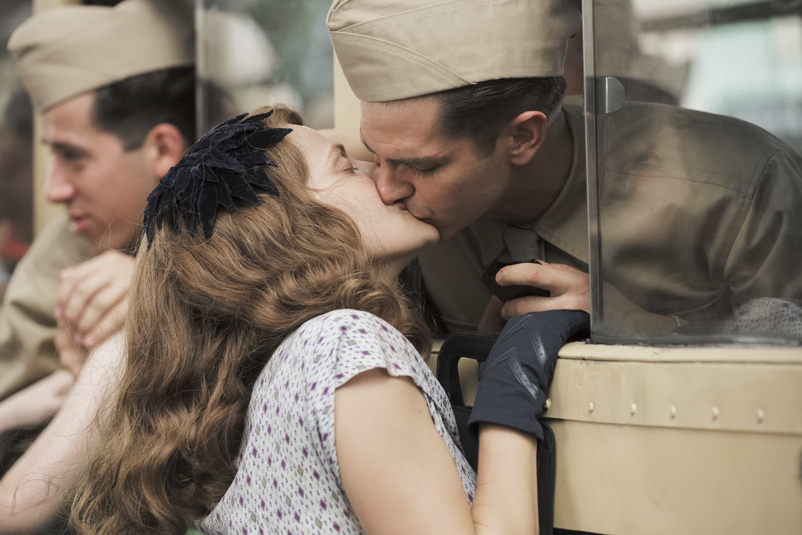
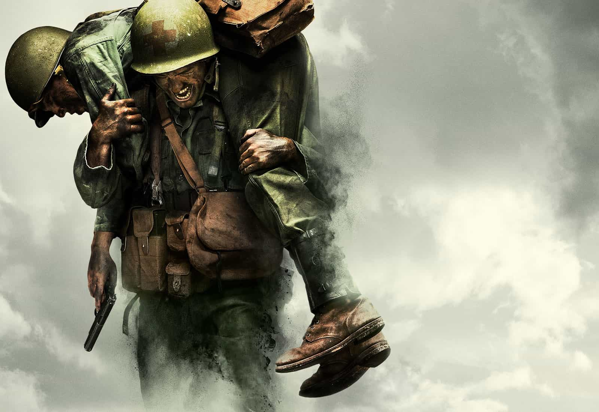

Damian Black is an American nationalist deploring the decline and seeking to rid the scourge of oblivion. Visit his nascent personal interest: The Black Decree


Directed by Mel Gibson, Hacksaw Ridge is an intense biographical war film authentically depicting the pacifist actions of WWII combat medic Desmond Doss, the first man to be awarded with the Medal of Honor without firing a single shot.
There are no bars held in capturing the true terrors of war, the nauseating grotesqueness of decaying bodies and the soul-numbing entropy of sudden death and horrific injury through industrialized weaponry.

However, even more valuable than the reality of warfare and military action are the genuine, virtuous ideals and loyal, reasoned adherence to them presented in Doss’s life.
From a traumatic childhood incident and faithfully religious background, he refuses to take another life. The traditional, honest relationships of the mid-1900s in both wartime and peacetime strike out at the viewer’s conscience in the current world of deceit and disloyalty.
Brilliant acting, vividly accurate cinematography, a powerful score, and deep philosophical themes make Hacksaw Ridge a breath of fresh air amongst the vague, vapid, and illogical liberal films of Hollywood (Avengers series, Suicide Squad, The Secret Life of Pets, etc).

Unexpectedly, Hacksaw Ridge provides an invigoratingly enjoyable demonstration of classic American game. After helping save a wounded man’s life with fundamental medical knowledge and carrying him to a hospital, he looks around while waiting, gazing upon an attractive nurse.
As the camera focused on her, the classic cinematic tell of love at first sight, I was eager to see what the real-life protagonist would do in the hurried hustle of a hospital.
He walks straight up and starts a conversation. Absolutely no hesitation. Though the nurse explained to him she was for blood donation, Doss practiced the game rule of literally saying anything, with the opener being that the blood all over his shirt wasn’t his.
After a brief talk, he donates his blood and goes on his merry way. The next day, cornily dressed his best, he states a gushy love confession that neomasculinity would shake its head at.

One would expect a simpleton beta from his seemingly innocuous Southern background and goofy smile, but he then goes straight for the close of the time: the movie date. She eagerly accepts, graciously rewarding him for his immediate courage and charming innocence.
After the date, in the most impressive and feminist rage-inducing moment, he kisses her without her permission. And it wasn’t a weak peck; it was seconds long until broken off by the girl. Shocked, she slaps and chastises him.
“You didn’t ask!”
“I thought you might’ve liked it.”
“Well I might’ve if you’d asked!”
Won over by his daring and charisma, she easily answers the later marriage proposal, but with unease. Doss asked directly after telling her he’d enlisted.
Similar to the hilarious yelling and name-giving scene in Full Metal Jacket, Hacksaw Ridge gives an insultingly comedic homage with its own sergeant’s introduction.
Later however, the mood deepens as Desmond’s pacifist tendency to not kill causes serious dissension amongst the ranks. All his senior officials do everything they can to throw the misplaced conscientious objector out of their army.
Even after he is brutally hazed, given incredibly unfair treatment, and accused of being a sanctimonious coward, he still firmly and truly believes in his duty to save life in his nation’s war all while remaining respectful. After grueling resistance, he is finally legally accepted as a combat medic.
“Private Doss, you are free to run under the hellfire of battle without a single weapon to protect yourself.”

Against all odds he finally climbs the heights to arrive on the battlefield with the rest of his squad, and it is there that his actions demonstrate true valor and faith. As grenades blast men apart, bullets smash through flesh and bone, and flamethrowers roast alive in stunning graphics, he is one of three medics frantically and decisively working to salvage lives from the brutal trench warfare.
Overrun by the Japanese, when a retreat is ordered before a friendly naval artillery strike, Doss carries his wounded friend only to realize he has died. In this pivotal moment, he is helpless and confused at God’s wishes of him. Then he hears the screams of the dying, crying out for someone to save them, a divine sign. Doss rushes back into the hell, demonstrating heroism amidst heroes.
Hacksaw Ridge demonstrates the epitome of masculinity in all its aspects: love, war, abuse, death, family, camaraderie, leadership, and the impact of the individual.
Read More: A Politically Incorrect Film That Offers A Ringside Seat To A Futile War